Frame 01 · Digital Colorization
Images of the Russian Empire: Colorizing the Prokudin-Gorskii Photo Collection
In the early 1900s, cameras couldn't just take colored photos. Thus, Sergei Prokudin-Gorskii photographed the Russian Empire by taking three black-and-white exposures of every scene through red, green, and blue filters. In this project, I form colored photos using his black-and-white filtered photos. To do this, I reassemble those glass plates by finding the right pixel offset and stack the three channels back on top of each other.
Overview
Each digitized glass plate negative is a single tall grayscale image, stacked as blue on top, green in the middle, red on the bottom. To rebuild the color photo, the green and red thirds each need to be shifted independently until they line up with the blue reference.
To begin, I performed a simple translation search. I tried every shift within the window (-30, 30) on both the x and y axes, score each one against the reference channel (in this case, blue), and keep the shift with the best score. I experimented with both normalized cross-correlation (NCC) and L2 as the scoring metric (minimizing L2 vs maximizing NCC), but the images shown on this page are all using the NCC score. This is because I found that NCC is more robust to things like brightness changes.
Step 1
Single-Scale Alignment
While Tobolsk aligns fairly well, the others do not align well at all. Another observation I had was that after alignment, Tolbolsk barely has any uncropped edges from the filters, whereas the other two images do. This suggests that maybe the edges are messing up the NCC score, motivating me to ignore the edges of each filter when calculating the NCC score. I try taking 10% of the borders off when calculating the NCC score.
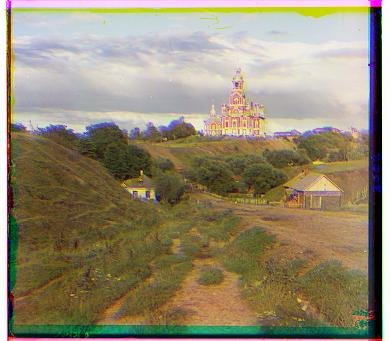
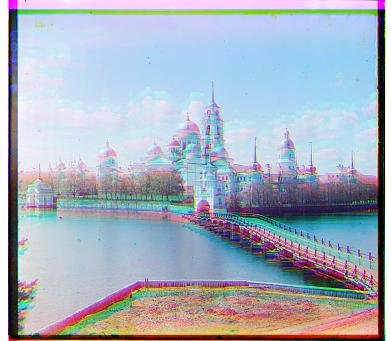
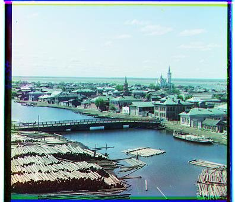
Step 2
Single-Scale with Cropping for NCC Score Calculation
I use the same exhaustive single-scale search, but now calculating NCC on a cropped interior region instead of the full image. As you can see, the cathedral and monestary have very different shifts than they did previously, showing that the borders of the images severely affected their NCC score.


Step 3
Pyramid-Aligned
Because the exhaustive window search takes O(n^2) time, it isn't efficient to do on large images and just increase the window size. Instead, we do a pyramid alignment. This is done by recursively scaling down the image to a smaller image and aligning the smaller image, then scaling back up and refining the alignment using an exhaustive search over a very small window (based on how much you scaled down).
As you can see, all of the images are aligned except for Emir. I looked at the raw R, G, B filtered images for Emir and found that reason it is difficult to align Emir is because Emir's attire has a high pixel value for blue, but barely has any red. This makes it difficult to align, as NCC alignment relies on each glass plate negative to have similar pixels.

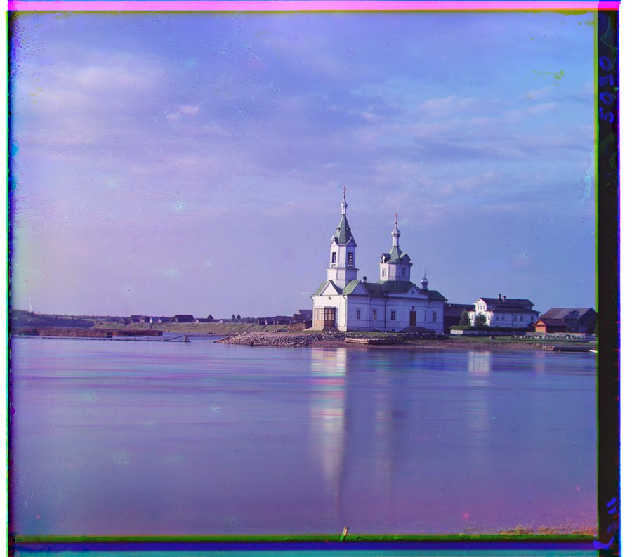
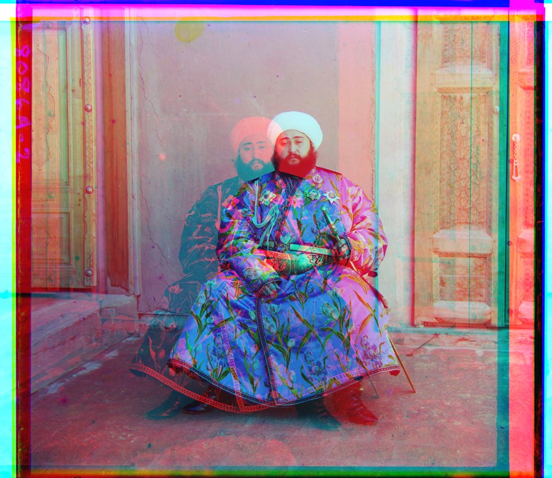
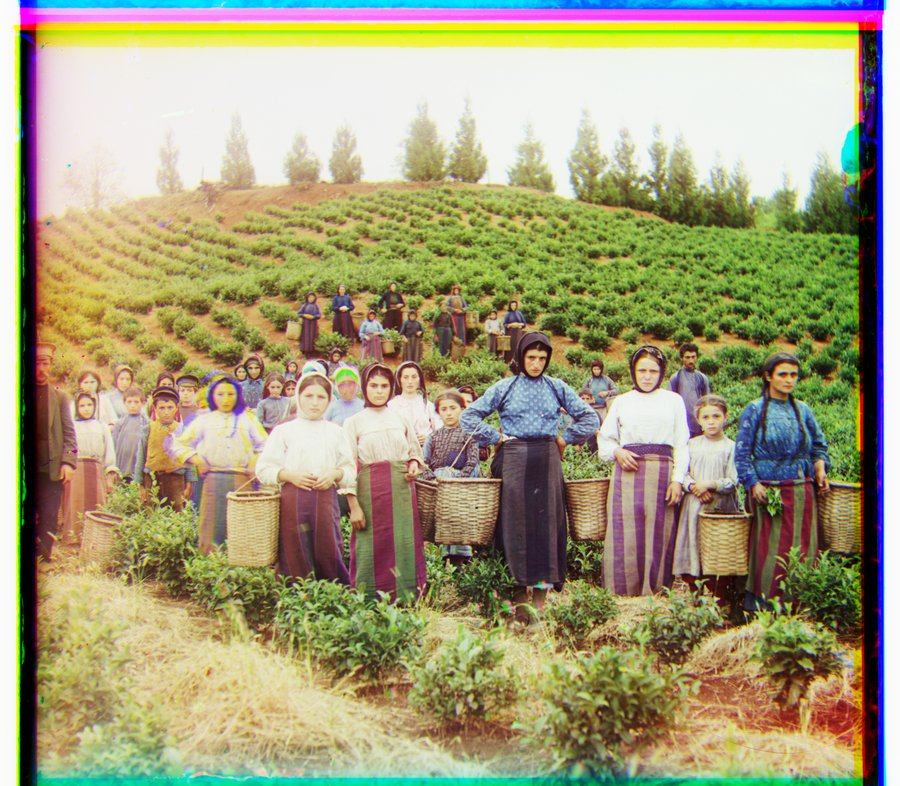
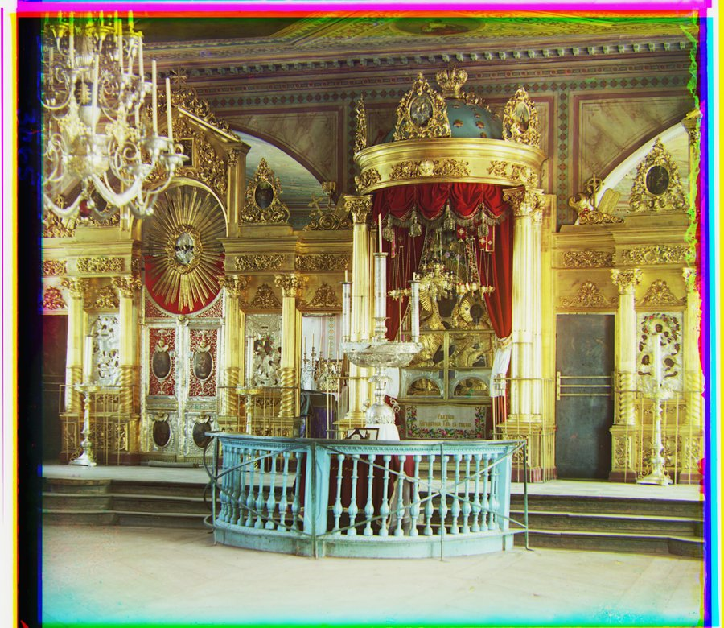
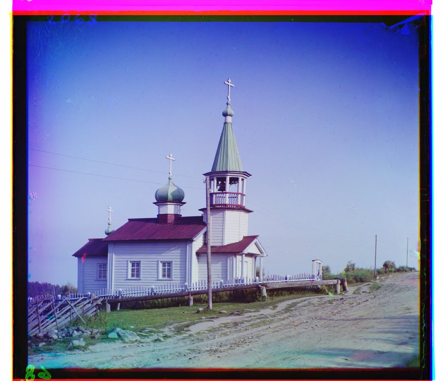
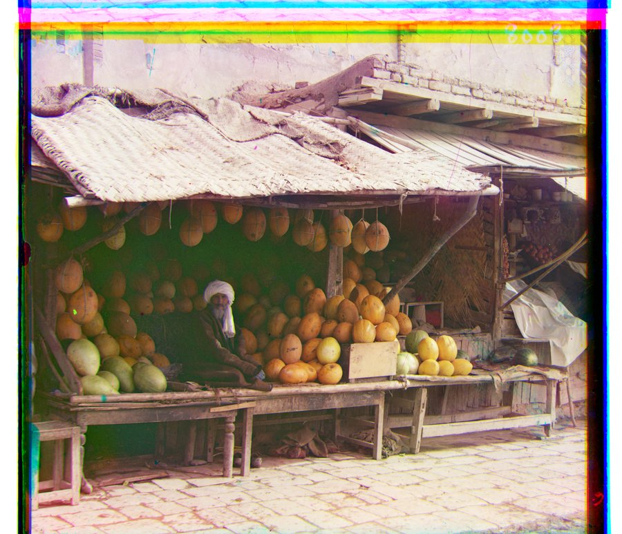

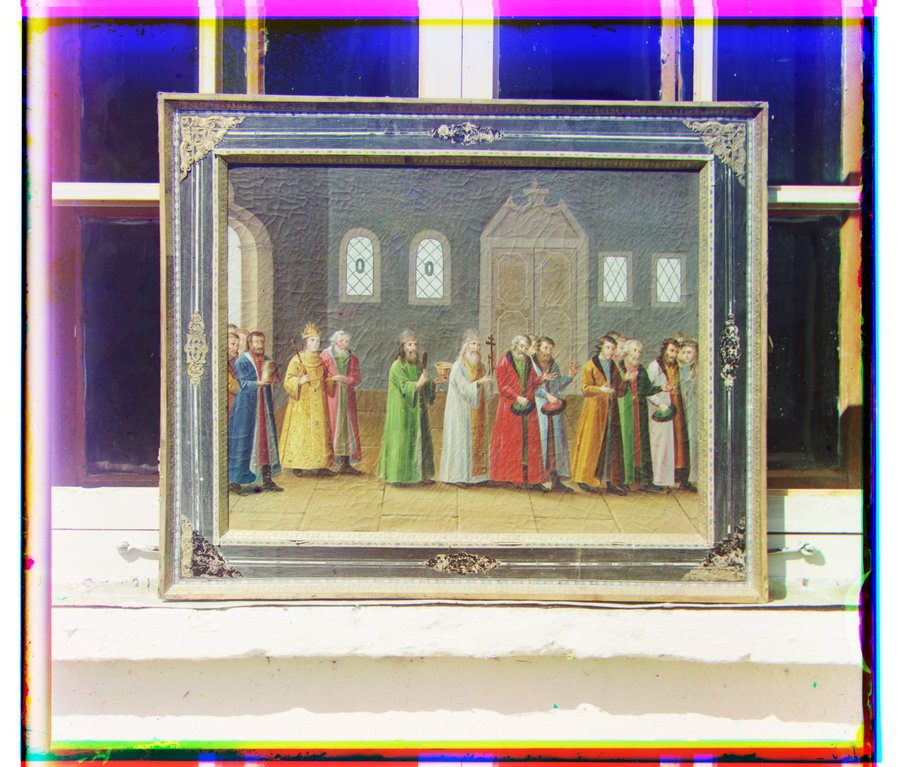
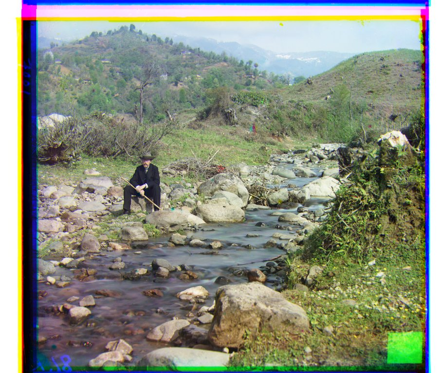
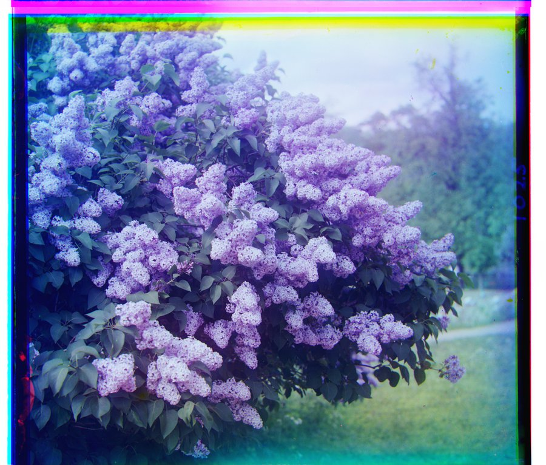
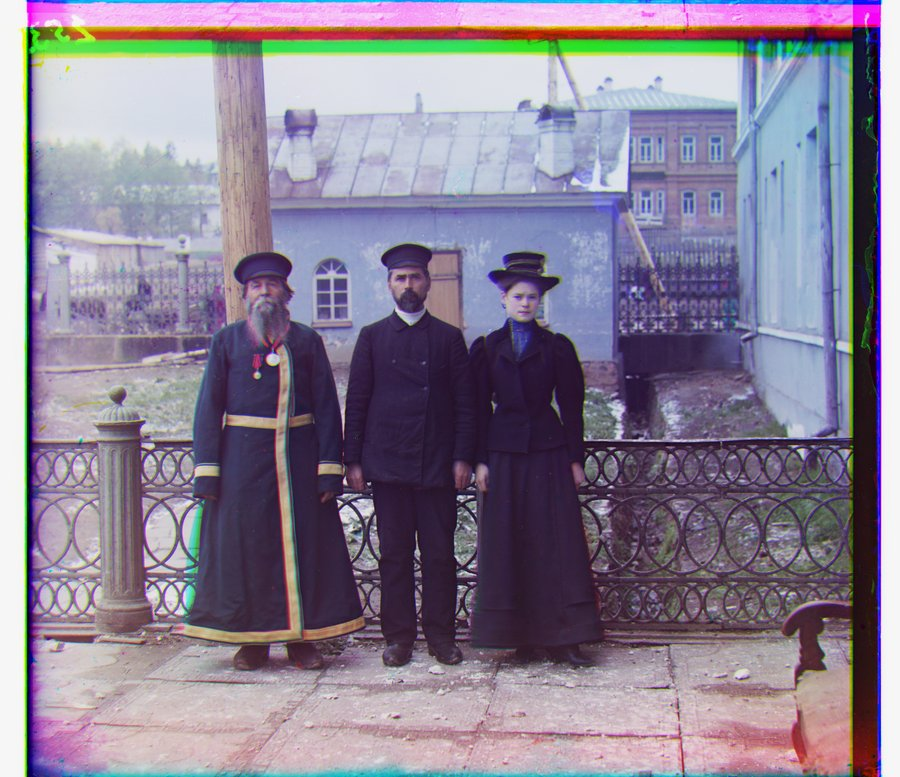
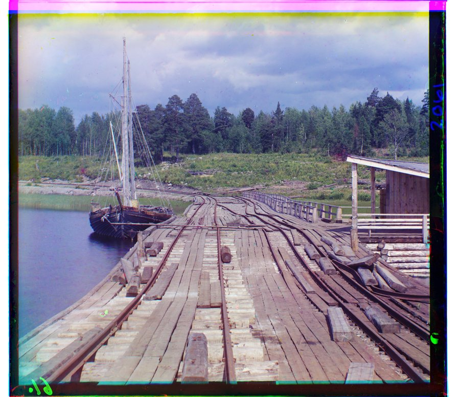
Step 4
Custom Images
I chose 3 of my own images from the website to run the pyramid-aligned algorithm on myself :D
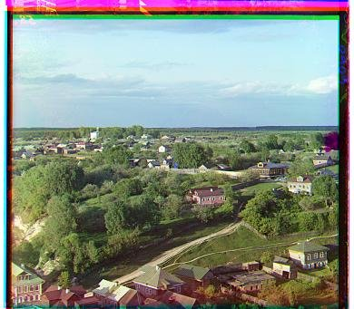
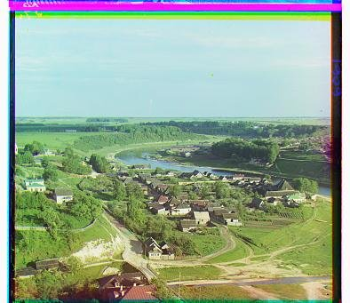
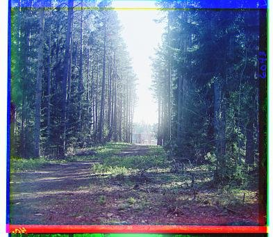